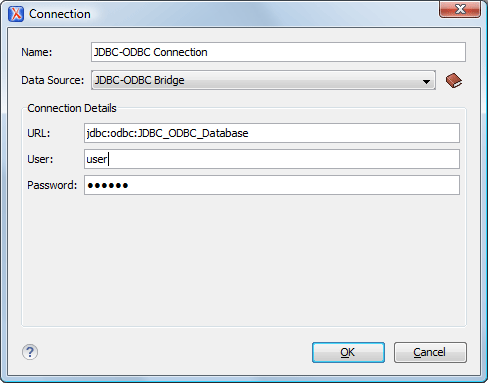

Starting with version 17, Oxygen XML Editor comes bundled
with Java 8, which does not provide built-in access to
JDBC-ODBC data sources. To access such sources, you need to find an alternative JDBC-ODBC
bridge or use a platform-independent distribution of Oxygen XML Editor along with a
Java VM version 7 or 6.
To configure a connection to an ODBC data source, follow
these steps:
The dialog box for configuring a database connection is displayed.
Figure 1. Connection Configuration Dialog Box

Enter a unique name for the connection.
Select JDBC-ODBC Bridge in the Data Source drop-down
list.
Enter the connection details.
Enter the URL of the ODBC source.
Enter the user name of the ODBC source.
Enter the password of the ODBC source.
Click the OK button to finish the
connection configuration.
To view your connection, go to the Data
Source Explorer view(if the view is not displayed, it can be opened by selecting
it from the Window > Show View menu) or switch to the
Databaseperspective.
 New button in the Connections panel.
New button in the Connections panel.